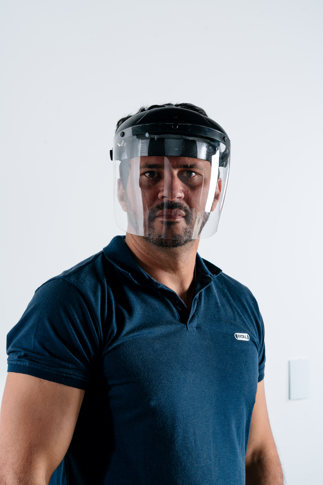

|
FISP 2026: conexões que fortalecem nossa presença no mercado
Entre os dias 6 e 8 de outubro, a UMP participou da FISP 2026, um dos principais encontros do setor de segurança e proteção no trabalho que aconteceu na capital paulista.

A feira foi uma oportunidade para apresentar nosso portfólio, conversar sobre os desafios enfrentados pelos profissionais da área e fortalecer o relacionamento com o mercado nacional e internacional.
A nossa participação também nos permitiu trocar experiências com profissionais do setor, conhecer diferentes demandas e reforçar a importância de oferecer equipamentos adequados às condições de cada ambiente de trabalho.
Esse contato direto com o mercado reforça o compromisso da UMP em desenvolver e oferecer produtos e soluções alinhados às necessidades de diferentes segmentos, considerando os desafios de cada operação e as exigências de segurança dos ambientes de trabalho. A troca de experiências também contribui para identificar oportunidades, aprimorar nosso portfólio e fortalecer o posicionamento da marca como parceira na proteção dos trabalhadores.
|
.png)